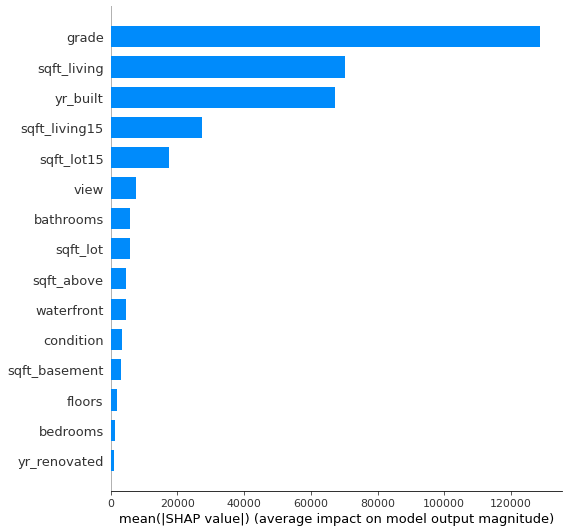
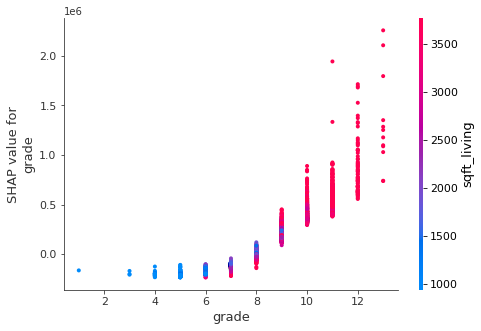
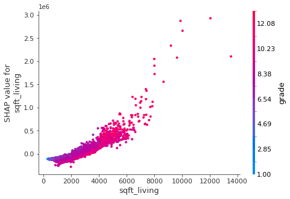
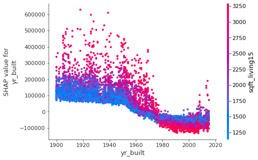
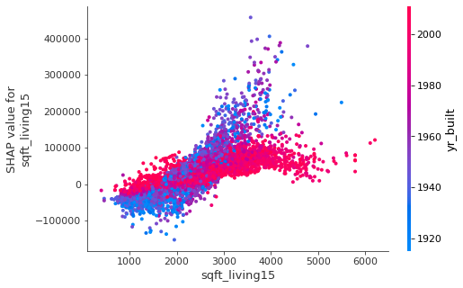

import pandas as pd
import shap
import numpy as np
dat = pd.read_csv('https://raw.githubusercontent.com/byui-cse/cse450-course/master/data/housing.csv')
dat.head()
dat['date'] = pd.to_datetime(dat['date'])
dat = dat.drop(columns = ['id', 'zipcode', 'lat', 'long', 'date'], axis = 1)Opening the Black Box
Machine learning models have a reputation for being “black boxes.” This is a problem because it’s very hard to trust a model if you don’t know why it makes the decisions it makes. For certain applications this can actually make models unusable because the risk of the model doing something unexpected is too high. This is where shap values come in. Shap values help open up the black box by calculating how much each feature contribute’s to the model’s prediction.
To demonstrate, I trained a random forest regression model on the housing dataset. For the sake of making this a simple demonstration, I only kept numeric features in the dataset, and trained the model on all the data instead of doing a train test validation approach.
from sklearn.ensemble import RandomForestRegressor
from sklearn.model_selection import KFold, cross_val_score
# prep data
y = dat['price']
X = dat.drop(columns = 'price', axis = 1)
forest = RandomForestRegressor(n_estimators=100, max_depth=10)
# scores=[]
# kFold=KFold(n_splits=10,shuffle=False)
# cv = cross_val_score(forest, X, y, cv=10)
# print(np.mean(cv))
forest.fit(X,y)Summary Plots
explainer = shap.TreeExplainer(forest)
shap_values = explainer.shap_values(X)
shap.summary_plot(shap_values, X, plot_type="bar")
To see an overview of what features are impacting the predictions the most, the shap library has an easy to use summary_plot function. We can see that the model gets the largest contributions in order from the grade of the home construction, square footage of the living space, the year the home was built, and the living space of the nearest 15 neighboring homes.
Dependence Plots
for i in range(0, len(X.columns)):
shap.dependence_plot(i, shap_values, X)To dig into how these 4 features are affecting the model’s predictions, I am using shap’s dependence plot function, which plots the contributions of the feature color coded by the additional feature that is the most likely to have an interaction.

The grade of the house is defined as the quality of its construction. It ranges in value from 1 to 13. This graph shows a positive relation between the predicted value of the house and the grade of the house, where houses with higher quality of construction also have higher property values. It makes sense that homes that are built better would be worth more, so we can say the model is predicting these values as expected. When we look at the sqft_living interaction, we see that most of the smallest homes also have the lowest grades and thus the lowest shap contributions. There is an interesting interaction we see around the grade 6 7 and 8 homes where some of the smaller homes have a higher shap contribution than smaller homes with the same grade. This is not what we would expect to see, so there is probably another unseen feature at play there. The relationship changes at grade 9 and above, with larger homes having higher predicted values than smaller homes at the same grade.

At first glance, this chart tells us that the model wants to predict higher prices for larger homes, which is exactly what we would expect it to do. Again we see the tinge of purple blue corresponding to lower home grade providing higher shap values than homes of the same size that are at a higher grade. This relationship seems to disappear on homes larger than 4000 sqft, but it is concerning to see it so pronounced on the smaller homes.

This chart shows a negative relationship between the year the home was built and the shap values for the year. The model is wanting to predict lower values for newer homes than for older homes. This pattern is not what I would think the model should be doing, and merits further investigation. Our last plot makes this relationship make a little more sense.

This plot shows the most obvious interaction of any of the others. There is a positive relationship between the size of the nearest 15 homes and the price the model predicts, but this becomes much more pronounced with the older homes, as we can see by the much more extreme slope of the blue/purple points corresponding to older homes vs the red points corresponding to newer homes. The model seems to want to predict much lower values for older homes with smaller neighboring homes than for older homes with large neighboring homes. This makes our last plot makes sense, it seems that the older homes have higher values than the newer homes as long as the neighboring homes are large, but not if the neighboring homes are small. This is likely because the old homes with large neighbors are not only currently in a wealthy area but seem to have been in a wealthy area for a long time, and location is extremely important in home valuation.
Conclusion
Shap values allow you to dig into your machine learning models and gain an understanding of how they are using your features. This leads to much more understandable and therefore more useful models. I encourage the use of shap values in your next machine learning project.